- Role
- Controls & Data Acquisition Engineer · Mar 2026 – present
- Owned
- Dyno instrumentation, the brake actuator, and the rear CAN node PCB
- Arc
- Arduino sensor bring-up → actuator design and manufacture → ESP32 + Koors40 closed loop
- Headline
- 3,674 lbf commandable at continuous current — 3.7× the 1,000 lbf operational target
- Status
- Actuator built and driven · rear node schematic through ERC · next: layout, fab, closed-loop PID
1 — Instrumenting the dyno
Before anything could be actuated, the dyno had to be able to measure. That started on an Arduino Mega with three sensors and an oscilloscope, working one channel at a time to establish which of them actually behaved as advertised.
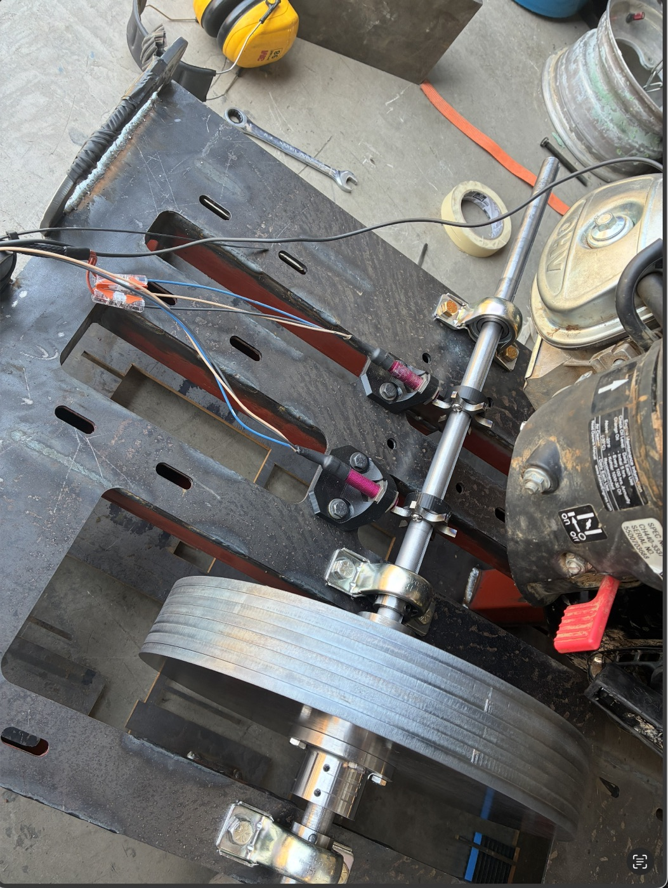
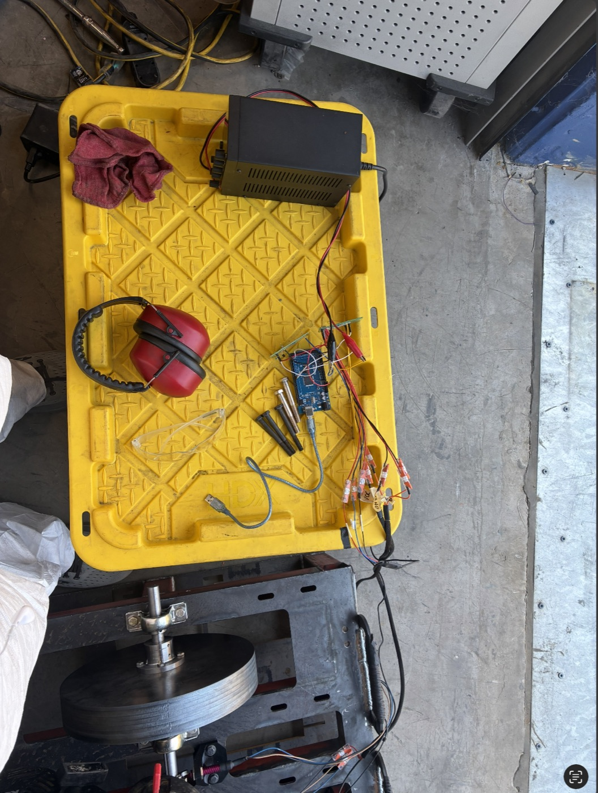
What kind of signal each sensor actually sends
This is the distinction that decides the whole front end. Two of these channels look identical on a block diagram — both are "RPM" — but one arrives as analog and one as digital, and that difference is why they need completely different circuits.
| Channel | Part | Signal out of the sensor | Conditioning | Into the MCU as |
|---|---|---|---|---|
| Primary RPM | Inductive pickup (AimTech), 12 V | Analog AC. Variable reluctance — a bipolar pulse whose amplitude scales with shaft speed. No fixed logic level to read. | Divider + Schottky clamp + TVS on the PCB; NPN switch on the bench | Digital edge → timer input capture |
| Secondary RPM | Hall effect GS100502, 5 V | Digital. Open-collector square wave, 3 pulses/rev. Already a clean two-state signal — it just cannot source current. | 4.7 kΩ pull-up + TVS | Digital edge → timer input capture |
| Reaction torque | Load cell 1000 kg + HX711 | Analog differential. A Wheatstone bridge output in mV/V — millivolts riding on a common-mode offset. | HX711 24-bit sigma-delta ADC does the conversion off-board | Digital serial → bit-banged clock/data |
| Shock travel | Linear potentiometer | Analog ratiometric. A voltage divider driven by the supply, so the reading tracks the rail. | RC filter; FMAC on the STM32 | Analog → ADC channel |
| Motor command | Koors40 driver | — | — | Digital out → 50 Hz PWM, 1000–2000 µs pulse width |
| Vehicle bus | TJA1051T/3 transceiver | — | — | Differential digital → FDCAN |
Why the analog/digital split is the whole design
The Hall channel is already digital — it needs a pull-up and nothing else, because an open-collector output can pull down but cannot pull up. The inductive channel is analog, unreferenced, and its amplitude depends on how fast the engine happens to be turning, so it needs to be squared up into a logic level before a timer can count it.
The load cell is the third case: analog, but so small that conditioning it on the MCU's own ADC would bury it in noise. Moving the conversion out to the HX711 turns it into a digital problem before it ever reaches the board.
Aside — the same sensor, on the car
This one is not the dyno. It is the hall effect mount for DAQ harnessing on the 2026 car — the gearbox-shaft bracket, not the test stand. It sits here because it is the other half of the same problem: the sensor is identical, and only the mount changes between the bench and the vehicle.
That is deliberate. The subteam's plan is for the '27 DAQ to be modular enough that moving between the two cars means swapping sensor mounts, not redesigning the acquisition chain — which is what makes it possible to collect baseline data off the '26 car and still show quantifiable improvement at competition.
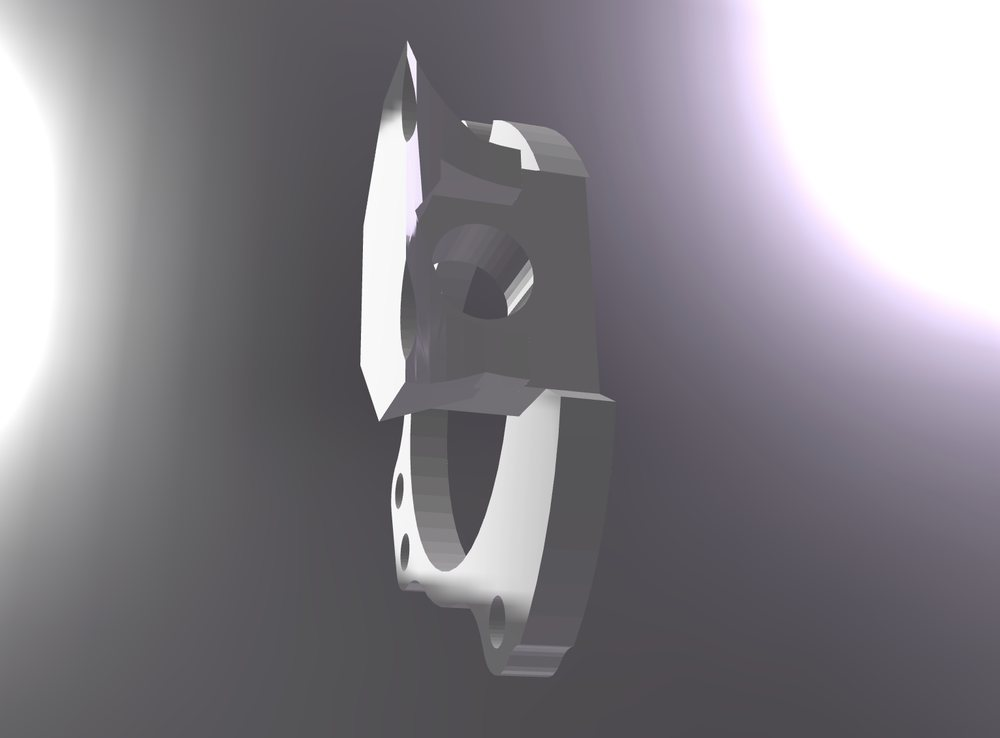
The inductive pickup — where the scope earned its keep
The inductive sensor produces a roughly 12 V bipolar pulse — well past any logic input's absolute maximum, on the 5 V Arduino bench and more so on the 3.3 V STM32 node. The obvious fix is a divider, and I designed a deliberately high-impedance one — 147 kΩ total, drawing only 82 µA — precisely because inductive pickups have high source impedance.
The most instructive failure of the project
On the scope it sagged to 2.4 V — below the logic threshold. The sensor could not source even 82 µA without collapsing. My analysis identified the right parameter and underestimated it by enough to make the circuit non-functional.
Original — attenuate the signal
100k / 47k divider with Schottky clamps. Depends entirely on the sensor being able to drive the divider. It couldn't.
Rebuild — regenerate the signal
2N3904 as a switch. The sensor no longer has to be the logic level — it only has to sink ~0.38 mA of base current, and the level is regenerated from the board's own 5 V rail. Its 12 V never reaches the MCU.
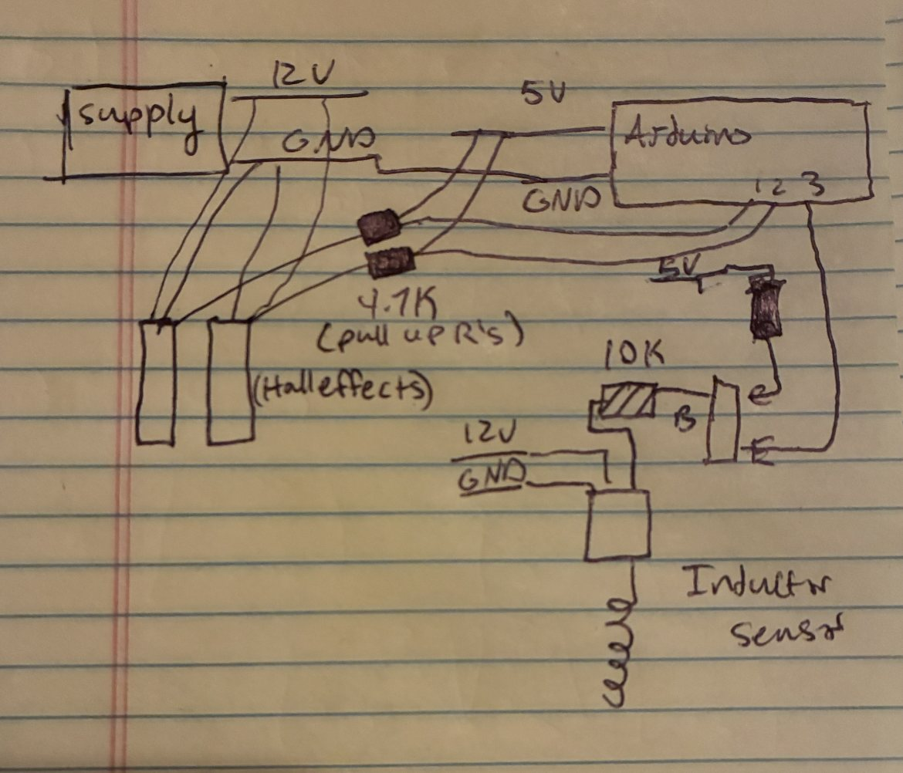
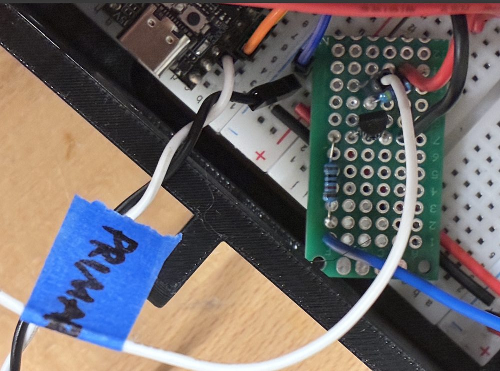
- The transistor inverts the signal, so timer capture triggers on the rising edge — the sensor releasing, not firing.
- The Hall channel needed the opposite treatment. It arrives already digital, so it needs no squaring-up at all — just a 4.7 kΩ pull-up, because an open-collector output can pull down but never up. The pull-up rail alone sets the logic-high level: 5 V on the Arduino bench, 3.3 V on the STM32 node, with no level shifting either way.
- 4.7 kΩ balances two failure modes. Larger, and the RC with parasitic capacitance rounds edges at 250 Hz; smaller, and the sensor sinks too much. At 4.7 kΩ: 0.7 mA sink, adequate edge rate.
- The generalisable lesson: a datasheet voltage tells you what a part outputs, not what it can output into a load.
Where it ended up
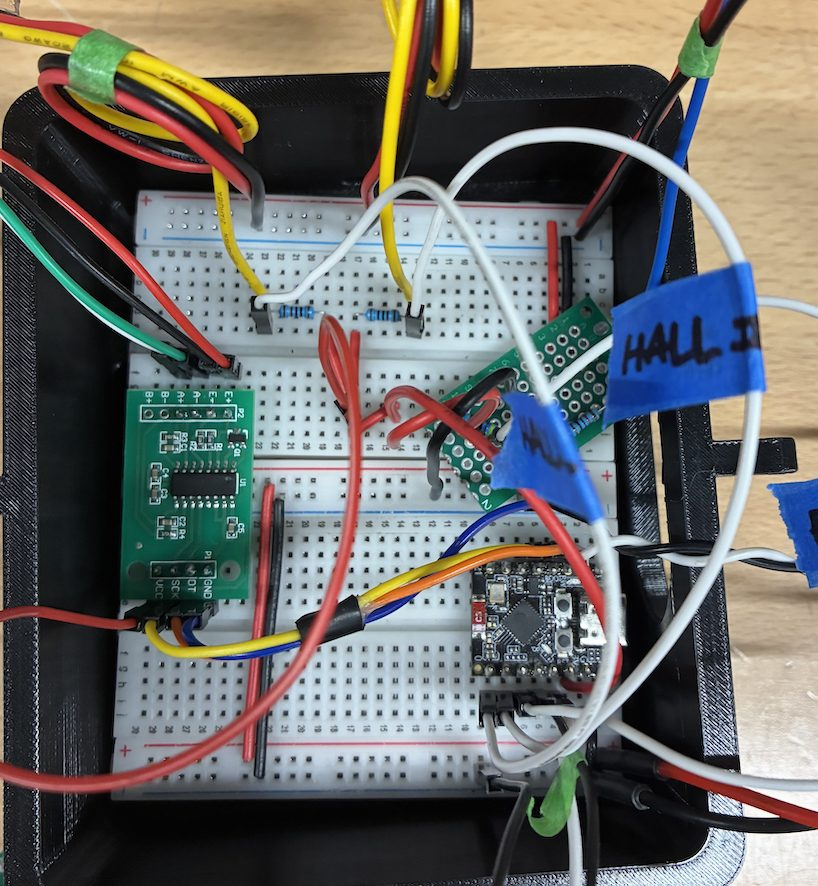
2 — Designing the actuator
With sensing proven, the dyno needed a way to apply load. A dynamometer measures engine torque by loading a spinning flywheel and reading the reaction force, so I owned the actuator: compress a hydraulic master cylinder with force that is commandable — a specific value on demand, repeatable across runs, adjustable under closed-loop control. That last requirement eliminated most of the obvious solutions.
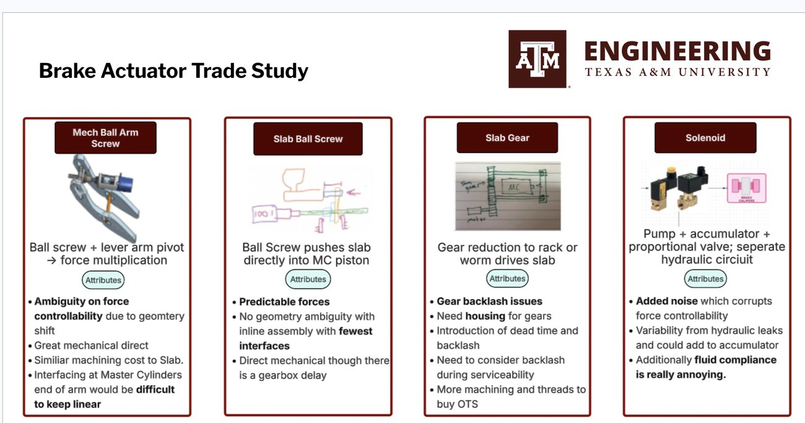
| Architecture | Verdict | Reason |
|---|---|---|
| Mechanical lever arm | Rejected | Mechanical advantage varies with arm position → non-linear plant → one set of PID gains can't be right across the stroke |
| Slab ball screw | Selected | Constant force at every stroke position; inherently low-backlash from the preloaded nut |
| Slab gear drive | Rejected | Same kinematics but adds backlash, which directly degrades position accuracy in a loop |
| Hydraulic solenoid | Rejected | New pump, accumulator, valve; replaces load cell feedback with a pressure transducer; leaks in a student shop |
The deciding argument
The lever arm was our instinct — mechanical advantage is the intuitive way to multiply force. What reversed it: geometry-dependent mechanical advantage is a control problem, not a mechanical one. Linear actuation removes the variable entirely, and the modest efficiency loss buys a plant that behaves the same everywhere.
The transmission chain
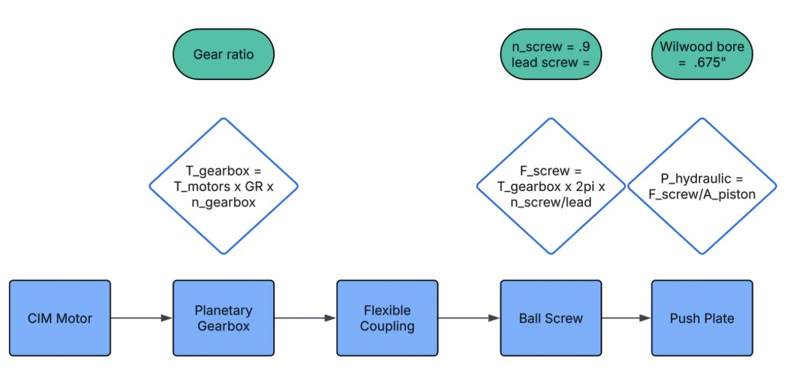
Sizing it
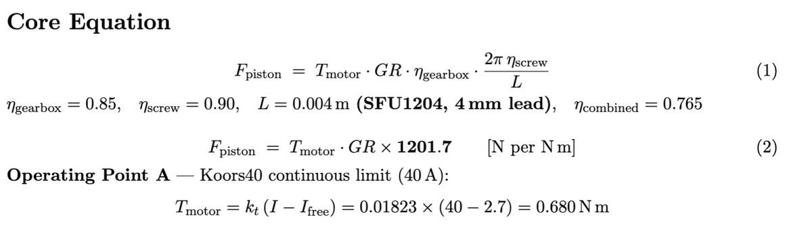
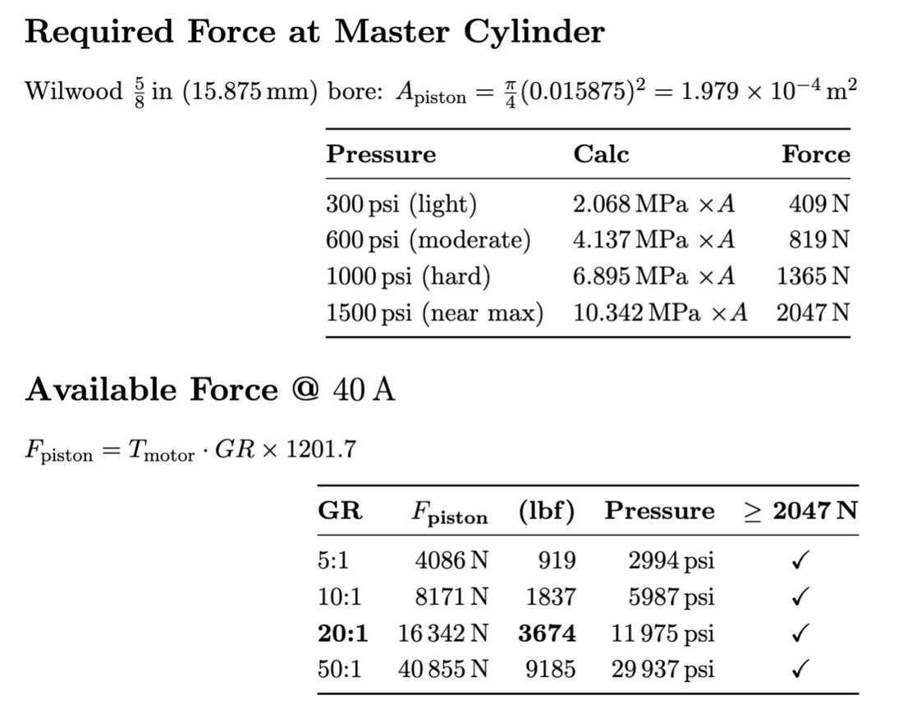
- The requirement comes from the master cylinder, not the motor. A Wilwood 5/8" bore gives A = 1.979 × 10⁻⁴ m², so 1,500 PSI at the piston — near-max braking — needs 2,047 N. Every ratio clears it; the question was which clears it with the right margin.
- Sized to the controller, not the motor. The CIM stalls at 133 A but the Koors40 sustains 40 A. Designing to stall torque means designing for an operating point the electronics can't hold and the motor can't survive thermally.
- 20:1 gives 3,674 lbf against a 1,000 lbf operational target and a 5,000 lbf ball-screw axial rating — enough headroom to absorb the friction and stiction hand calcs understate, without running the screw near its limit.
- It costs speed. 265.5 RPM at the screw → 17.7 mm/s, so a 25 mm stroke takes ~1.4 s. Fine for steady-state RPM sweeps; the trade was evaluated up front, not discovered later.
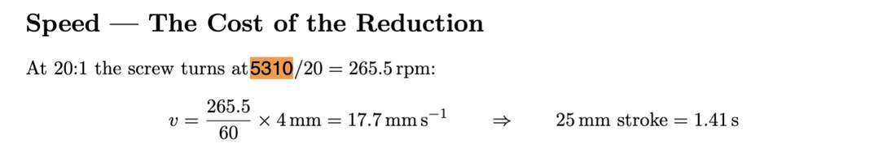
A correction worth recording
These figures were originally computed with a 5 mm lead. The screw is an SFU1204 — 4 mm lead. Because L sits in the denominator, a 20% shorter lead raises every force by exactly 25% and drops linear speed by exactly 20%. Nothing else in the chain moves, which is what makes the error easy to miss and easy to fix: one number propagates cleanly through everything downstream.
Structure and manufacture
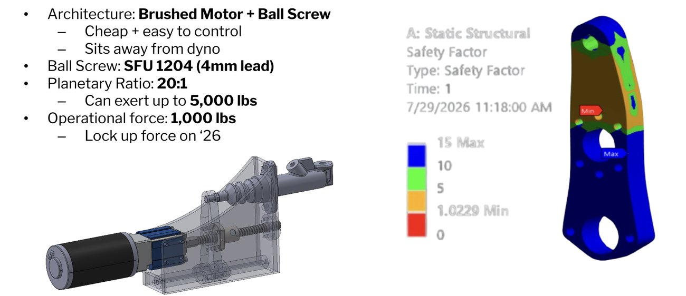
Minimum FOS 1.023 — not a passing result
6061-T6, 1,000 lbf at the piston face, ANSYS Static Structural. FOS 1.02 means the part sits at the edge of yield with no allowance for manufacturing variation or dynamic overshoot. The value was in locating it: a stress concentration at a narrow waist, not general material inadequacy — so thickening that waist costs almost no mass. Target for the revision is 1.25, matching the Chassis standard.
The analysis is static only. It misses inertial loading on direction reversal and shock at the hard stop. I flagged that in design review rather than presenting it as complete.
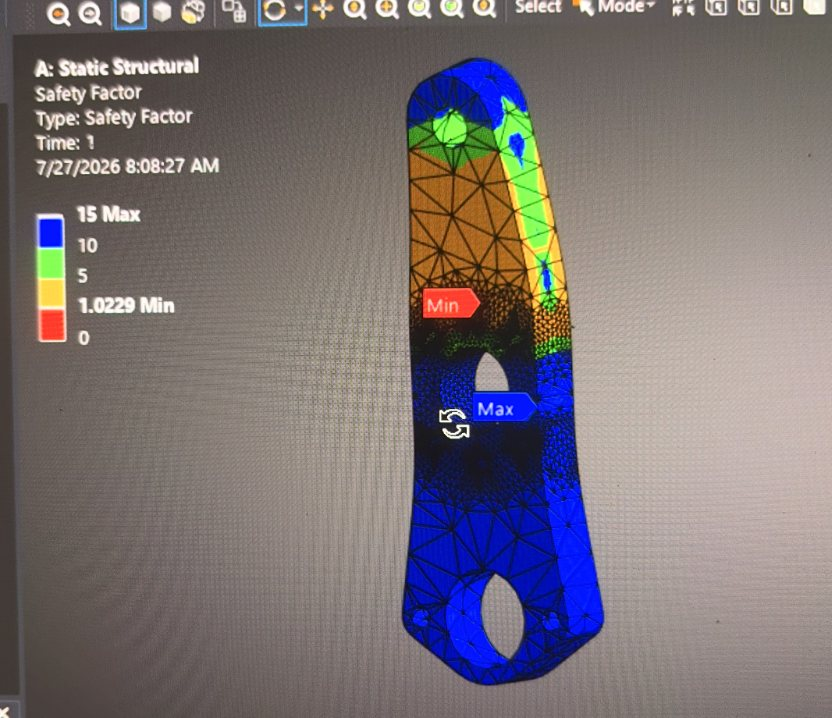
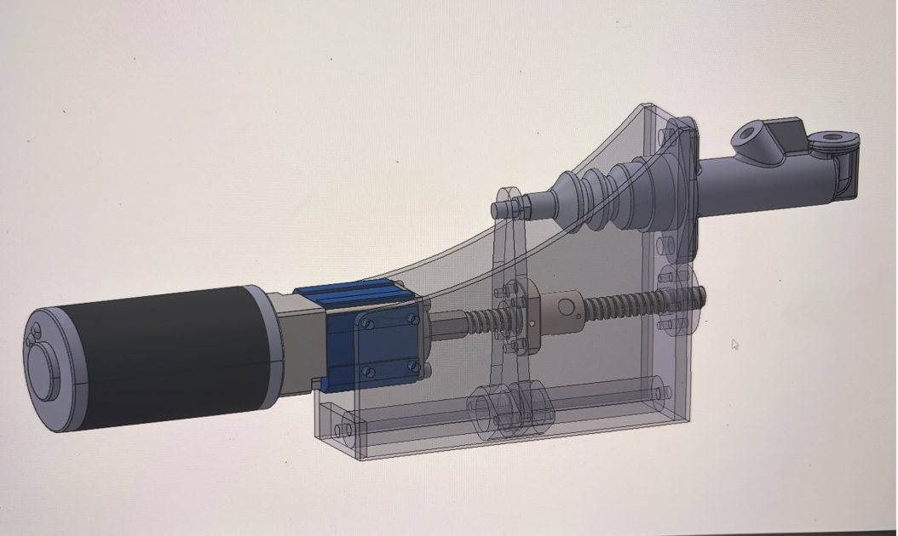
3 — Driving it: ESP32 and the Koors40
With the actuator built, control moved off the Arduino and onto an ESP32-C3 — hardware LEDC PWM, hardware pulse counting, enough GPIO, under $10. Firmware is split into separate translation units for sensor acquisition, motor command, and control logic, so teammates can change one subsystem without reading the others.
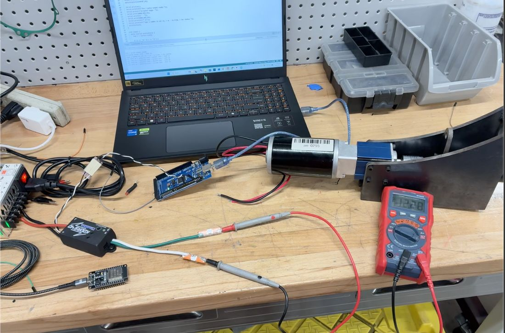
| Signal | Interface | Method |
|---|---|---|
| Primary RPM | Inductive → 2N3904 | Falling-edge ISR, period measured in µs between edges |
| Secondary RPM | Hall effect | Falling-edge ISR, 3 pulses/rev, 5,000 RPM ceiling |
| Load cell | HX711 | 24-bit ADC, cal factor −695.0, EMA filter (α = 0.20) |
| Motor command | LEDC PWM | 50 Hz, 14-bit, 1000–2000 µs to the Koors40 |
- Period, not pulse-count. Timestamping edges gives a fresh reading every pulse instead of waiting for a window to close — it matters when the engine is accelerating through its range.
IRAM_ATTRon the handler so it executes deterministically even during flash operations.- Software debounce for one comparison — reject any edge arriving faster than physically possible at the sensor's rated max speed.
- Interrupts off for the shared read, because the ISR can fire mid-copy and produce a torn value.
void IRAM_ATTR onHallPulse() { unsigned long now = micros(); if (lastHallMicros > 0) { unsigned long interval = now - lastHallMicros; if (interval >= MINIMUM_SECONDARY_INTERVAL_US) { // debounce guard hallIntervalMicros = interval; newHallPulse = true; lastHallMicros = now; } } else { lastHallMicros = now; } }
Failing safe
If no fresh HX711 conversion arrives within one second, the ready flag clears and the controller commands neutral. On a rig capable of over 3,600 lbf, the difference between stopping and pushing on stale data matters.
if (!isLoadCellReady()) { writePulseUs(NEUTRAL_PULSE_US); // fail to a known safe state return; }
Control: what's built vs. what's designed
Implemented today
Open-loop proportional. Load cell reading scales into a PWM offset with a deadband and a clamp. No setpoint subtraction, no integrator — this is the baseline proving the sensing and actuation paths work end to end, not the final controller.
Designed next
PID plus feedforward. Feedback alone is reactive — error must exist before the controller responds. A plant model pre-computes the approximate command, so PID only corrects the residual. Cuts settling time and limits windup on long sweeps.
Closing the loop
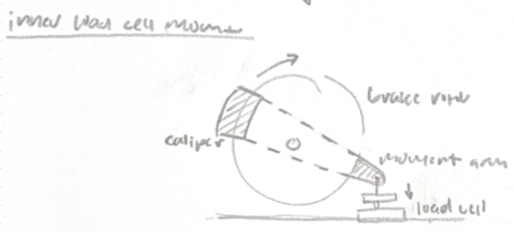
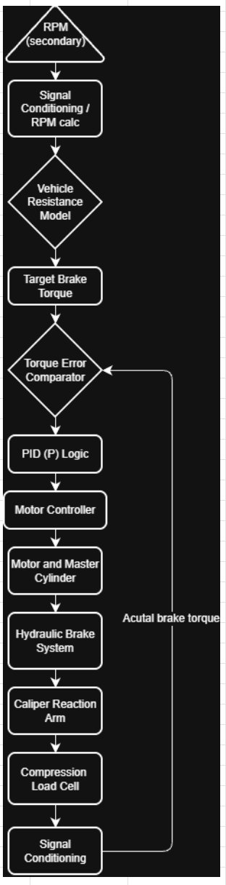
Latency budget
Asked in design review how the system handles transients, I needed numbers, not reassurance:
| Contributor | Magnitude | Set by |
|---|---|---|
| PWM command | 20 ms | 50 Hz Koors40 servo protocol |
| Load cell sample | ~12.5 ms | HX711 at 80 SPS |
| EMA filter lag | Several samples | α = 0.20 |
| Full actuator stroke | ~1.4 s | 20:1 reduction on a 4 mm lead |
Mechanical stroke dominates by two orders of magnitude. The electronics aren't the bottleneck — the reduction is, and that was a deliberate choice favouring force precision over speed.
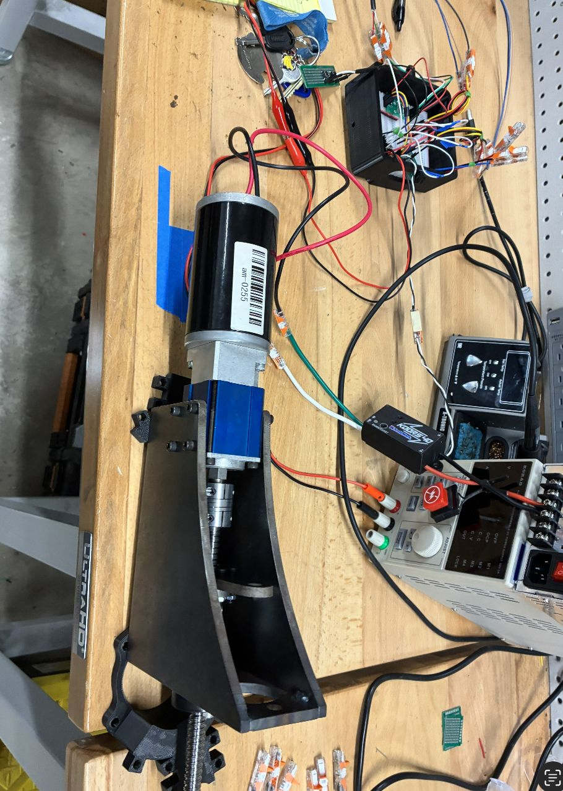
4 — From bench to vehicle: the rear CAN node
Everything above lives on a test stand. The car itself runs a distributed CAN network with front, rear, and central nodes; the rear node acquires powertrain and rear-suspension data and publishes it to the bus — engine RPM, CVT secondary RPM, and two rear shock pots.
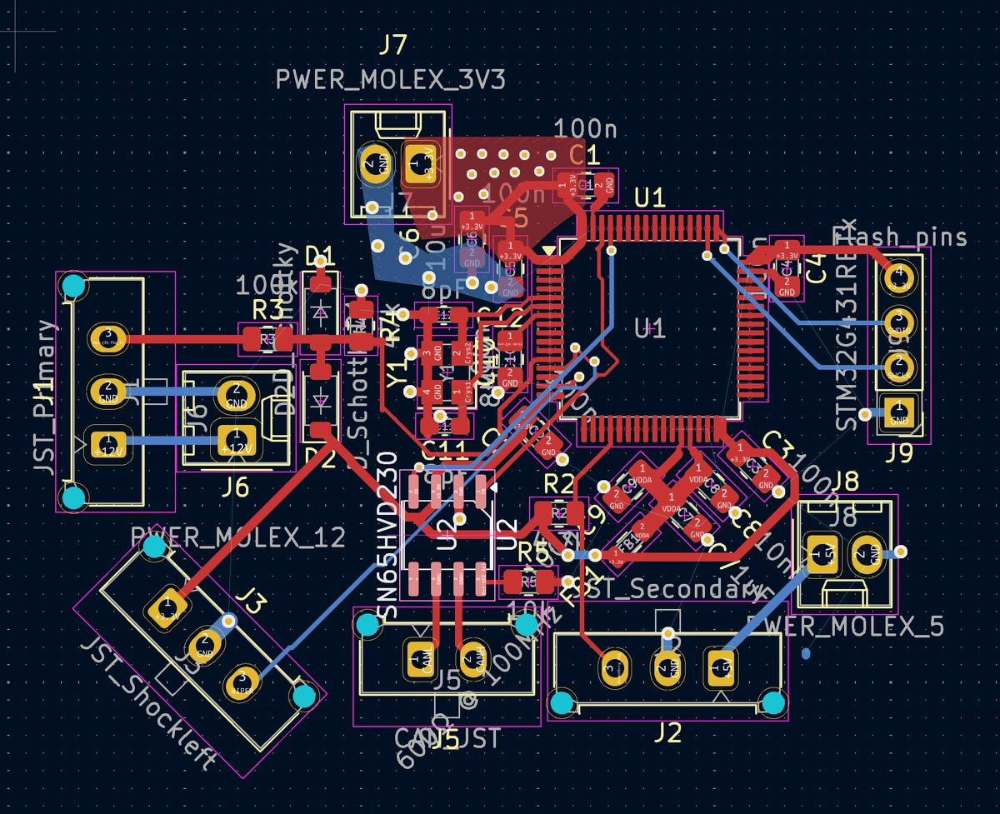
- STM32G431RBTx for native FDCAN, hardware timer capture that removes the ISR jitter the ESP32 approach carries, and an FMAC accelerator to offload shock-pot filtering.
- Everything external gets clamped — TVS on every rail, on both RPM inputs, and across the CAN pair. A bench is forgiving; a chassis is not.
- Termination on a jumper, because which node sits at the physical end of the bus changes with how the car is wired.
5 — Systems integration
Interim Design Review criticised the subteam for specifying sensors without confirming anyone would consume the data. Rather than defend the scope, I re-sorted the list with Powertrain directly:
| Sensor | Before | After | Why |
|---|---|---|---|
| CVT belt temp | Critical | Expendable | Doesn't inform driving or tuning decisions |
| Gearbox casing temp | Not planned | Conditional | An IR gun gives deltas without a permanent sensor |
| Sheave position | Not planned | Added | Genuine measurement gap for validating CVT behaviour |
| Throttle position | Critical | Under review | Possibly redundant with existing measurements |
Removing a sensor I had already justified is not a loss. Instrumentation nobody consumes costs mass, harness complexity, failure modes, and hours.
CVT slip — a methodology contribution
Primary and secondary RPM give a calculated CVT ratio, but that silently assumes the belt isn't slipping. Adding a time-of-flight sensor on the sheave gap gives an independent measurement of where the belt actually sits:
Gives Powertrain a slip map, CVT shift-curve validation, and secondary engagement RPM — three deliverables that didn't exist before. VL53L1X, I²C, 1 mm resolution, under $10, mounted identically on car and dyno so bench and track data stay comparable.
What I took from it
- Design to the real constraint, not the headline spec. The operating point is set by whichever component in the chain gives out first — here, the controller at 40 A, not the motor at 133 A.
- A mechanical choice can be a control choice. The lever arm lost on transfer-function grounds. You only see that if you evaluate mechanical and control architecture together.
- Trust measurement over analysis. The divider was calculated correctly and still failed on the scope. The right response was finding the unmodelled parameter, not defending the math.
- One wrong constant propagates silently. A 5 mm lead where a 4 mm one belonged shifted every force in the chain by 25% — and nothing downstream looked obviously wrong, because the arithmetic was internally consistent.
- Scope reduction is progress. Cutting justified sensors was correct once it was clear nobody would use the data.